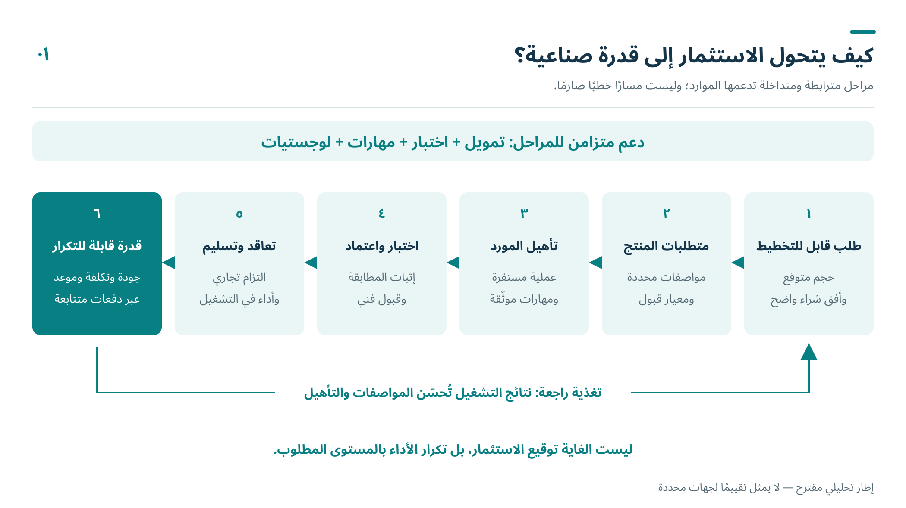
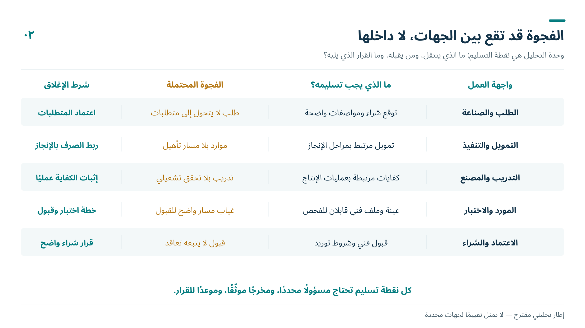
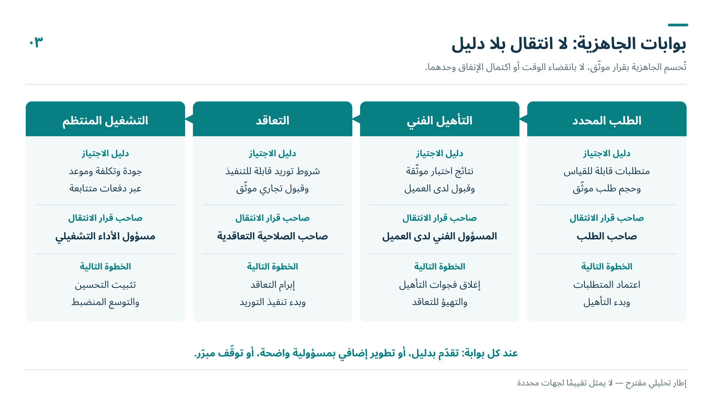

من وضوح الأدوار إلى اتصال التنفيذ
تناولت المقالة الأولى الانتقال من الزخم إلى العمق الصناعي والتقني، وناقشت المقالة الثانية الجهات المحورية والفرق بين الدور المأمول والأداء الفعلي. وتبقى بعد ذلك مسألة حاسمة: كيف تتحول الأدوار المتعددة إلى مسار تنفيذي متصل، تنتهي فيه الفرصة الاستثمارية إلى قدرة إنتاجية يمكن الاعتماد عليها؟
قد يكون لكل جهة اختصاص واضح، ولكل برنامج موارد ومؤشرات أداء، ومع ذلك تتوقف رحلة المورد أو المستثمر عند نقطة تقع بين جهتين. فالمصنع يحتاج إلى مورد مؤهل، والمورد يحتاج إلى طلب يبرر الاستثمار، والممول يحتاج إلى قرائن على الجدوى، وجهة التدريب تحتاج إلى معرفة المهارات المطلوبة وتوقيت الحاجة إليها. لكل طرف منطقه المشروع، لكن توافق هذه المنطلقات لا يتحقق بمجرد اجتماع أصحابها.
من هنا أقترح قراءة الفجوات المؤسسية والتنفيذية من خلال نقاط انتقال العمل والقرار. والمقصود بالفجوة هنا وظيفة غير مكتملة، أو علاقة لا تصل بين مخرج جهة واحتياج جهة أخرى في الوقت المناسب. وهذه قراءة تشخيصية لتصميم التنفيذ، وليست حكماً بأن كل فجوة موصوفة أدناه قائمة في المملكة، ولا تقييماً لجهة محددة دون أدلة. أما الأمثلة الواردة فهي افتراضية لتوضيح آليات التعثر المحتملة وطرق معالجتها.

أولاً من حجم السوق إلى طلب يستطيع المورد البناء عليه
تبدأ إحدى أهم الفجوات عند ترجمة الطموح القطاعي إلى طلب محدد على مستوى المكونات والعمليات والخدمات. فأعداد السيارات المستهدفة والطاقة الإنتاجية المعلنة مفيدة لتقدير الاتجاه، لكنها لا تكفي وحدها لاتخاذ قرار بإنشاء خط إنتاج لمكوّن معين. يحتاج المورد إلى معرفة المواصفات، والكميات المحتملة، وتدرجها الزمني، وآلية اختيار الموردين، ومن يملك قرار الشراء.
لنتصور شركة محلية تدرس تصنيع جزء معدني للسيارة. قد تبدو الفرصة واضحة عند النظر إلى السوق الإجمالية، ثم يتبين أن اختيار المورد يتم ضمن تعاقد عالمي، أو أن التصميم سيتغير، أو أن حجم الطلب المتاح محلياً لا يبرر معدات مخصصة. عندئذ تكون المشكلة في الفجوة بين الطلب المفترض والطلب الذي يمكن للشركة المنافسة عليه، لا في ضعف رغبتها في الاستثمار.
المطلوب لذلك إعداد خريطة طلب صناعي قابلة للتحقق، تميز بين الطاقات المستهدفة، والإنتاج الفعلي، والتوقعات التجارية، والعقود. وتحدد لكل عائلة مكونات صاحب قرار الشراء، وشروط الدخول، وموعد فتح المنافسة، مع احترام السرية التجارية. كما ينبغي اختبار إمكان جمع طلب عدة مشترين على قدرة مشتركة، دون افتراض تطابق مواصفاتهم أو تحويل التوقعات إلى ضمانات شراء غير موجودة.
ثانياً من ترشيح المورد إلى تأهيله ثم تعاقده
التعرف على الموردين وإدراجهم في قواعد البيانات خطوة أولية. أما تطوير المورد فيبدأ عندما تُحدد المسافة بين قدرته الحالية وما يقبله العميل، ثم تُوزع مسؤولية قطع هذه المسافة: من يساعده على تحسين العملية؟ من يمول العينات؟ من يحدد الاختبارات المقبولة؟ ومن يحسم نتيجة التأهيل؟
قد تنجح شركة في إنتاج عينة، لكنها تتعثر في الحفاظ على ثبات الجودة أو في توثيق التتبع أو في الالتزام بجدول التسليم. وقد تجتاز جانباً فنياً ثم تظل خارج التعاقد بسبب شروط تجارية أو قرار شراء لا تملكه الجهة المحلية. ولذلك ينبغي الفصل بين التأهيل الفني، واعتماد المورد لدى العميل، والحصول على عقد، والقدرة على الوفاء به. لكل مرحلة دليلها، ولا تختصر إحداها المراحل الأخرى.
وتقدم دراسة ميدانية عن صناعة السيارات في التشيك تنبيهاً مهماً: وجدت روابط محلية محدودة وآثاراً متفاوتة لانتقال المعرفة من الشركات الأجنبية إلى الشركات المحلية. وهي نتيجة تخص سياقاً بعينه، لكنها تمنع افتراض أن استقطاب الاستثمار يكفي وحده لبناء روابط توريد عميقة. [1]
يمكن معالجة هذه الفجوة بملف تأهيل مشترك لكل مورد مرشح، يربط متطلبات العميل بخطة تطوير محددة، وتكلفتها، وأدلة اجتيازها، والقرار التجاري التالي. وتنتهي كل مراجعة للملف بقرار موثق: اجتياز التأهيل، أو العودة إلى التطوير بخطة وموعد محددين، أو استبعاد المسار لعدم جدواه؛ بدلاً من بقائه فرصة مفتوحة في التقارير.
ثالثاً من توفير الاختبار إلى قبول نتيجته
قد تتوافر معدات الاختبار، بينما لا تتوافر الخدمة التي يحتاجها المورد بالضبط. وقد تتوافر الخدمة، لكن نتائجها لا تُقبل لدى العميل المستهدف، أو يأتي موعدها بعد نافذة التأهيل. هنا تظهر أهمية النظر إلى الاختبار والمطابقة باعتبارهما جزءاً من مسار الإنتاج والتعاقد، مع الحفاظ على استقلال الحكم الفني.
السؤال التنفيذي ليس فقط: هل نحتاج إلى مختبر محلي؟ بل: ما الاختبارات التي يتكرر عليها طلب كافٍ؟ ما نطاق الاعتماد المطلوب؟ هل يعترف العميل بنتائجها؟ وما زمن الخدمة وتكلفتها مقارنة بالبدائل؟ فقد يكون توفير خدمة مشتركة محلياً مجدياً، بينما يكون التعاقد المنظم مع مختبر خارجي في مرحلة مبكرة أكثر كفاءة من إنشاء مرفق قليل الاستخدام.
وتوضح دراسة سلسلة قيمة الأجهزة الطبية في كوستاريكا أن كلفة التأهيل، وقرارات التوريد لدى الشركات العالمية، وحجم الطلب على خدمات الاعتماد، يمكن أن تحد من اندماج الموردين المحليين رغم حضور مصانع عالمية. أهميتها هنا في إظهار آلية الفجوة، لا في نقل أحكامها إلى المملكة. [2]
وعليه، يجب الاتفاق على مسار قبول الاختبارات قبل تحمل نفقات تطوير كبيرة. التسريع المنضبط يعالج الانتظار وتكرار الإجراءات وعدم وضوح المتطلبات، ولا يتحقق بخفض متطلبات السلامة أو الجودة.
رابعاً من تمويل المنشأة إلى تزامن شروط تشغيلها
يتوزع تكوين القدرة الصناعية على قرارات لا تتخذها جهة واحدة: تجهيز الموقع، ووصول المعدات، وتوفير الخدمات، وتأهيل العاملين، واعتماد العملية، ثم انتظام الطلب. وقد تُنجز كل جهة عملها وفق جدولها، بينما تتأخر القدرة على التشغيل لأن أحد الشروط التابعة لم يكتمل.
لذلك تحتاج المشروعات المرتبطة بسلسلة واحدة إلى جدول مشترك لترابط المهام ومواعيدها. يبين هذا الجدول ما الذي يتوقف على ماذا، وأي تأخير يمكن استيعابه، وأي تأخير يغير الجدوى أو يعطل سلسلة من الموردين. وتدخل الخدمات اللوجستية هنا بوصفها قدرة على تنفيذ تدفق منتظم وموثوق للمواد والمكونات، بما يشمل المعلومات والمناولة والتخزين، لا مجرد قرب جغرافي من ميناء أو طريق.
ويُفترض أن يعكس التمويل هذا التدرج. فتمويل المعدات لا يعالج بالضرورة نفقات تطوير العينات أو إعادة الاختبار أو رأس المال العامل بين التسليم والتحصيل. وفي المقابل، ليس الحل مطالبة المورد بعقد نهائي قبل أي دعم، إذا كان العقد نفسه مشروطاً باستثمار في التأهيل. الأنسب توزيع المخاطر على مراحل واضحة، بأدلة انتقال وقرارات توقف، مع بيان من يتحمل كلفة التأخر أو تغير الطلب.
وينطبق التحفظ نفسه على المواد. يمكن للطلب الصناعي المتكرر أن يحسن جدوى خدمات المعالجة والتوزيع وأن يساعد على توزيع بعض التكاليف الثابتة، لكنه لا يضمن انخفاض أسعار المواد الخام أو الدرجات المتقدمة المطلوبة. يجب اختبار الميزة على مستوى المادة والمواصفة والحجم وكلفة التسليم، لا استنتاجها من وجود مصنع سيارات.
خامساً من أعداد المتدربين إلى قدرة هندسية في موقع العمل
يوفر التوسع الصناعي فرصة لبناء طلب مستمر على التعليم التقني والهندسي. لكن جدوى برنامج متخصص أو كلية جديدة تتوقف على نوع العمل الذي سينشأ، وحجمه، واستمراره، ومسارات التطور المهني المتاحة فيه. ولا تكفي توقعات الوظائف الإجمالية لتحديد ذلك.
تبدأ المواءمة من العمليات الفعلية: ما المهارة المطلوبة لتشغيلها؟ وما المهارة اللازمة لضبطها وصيانتها وتحسينها؟ وقد تتغير الإجابات بين تركيب الخط، وبداية الإنتاج، ثم رفع الإنتاجية وتقليل العيوب. فإذا صُمم التدريب على احتياج لحظة الافتتاح وحدها، فقد ينجح في تغطية البداية دون أن يدعم التعمق الهندسي اللاحق.
المطلوب ربط خطة المهارات بخريطة العمليات والموردين، مع مشاركة أصحاب العمل في تعريف الكفاءة وقبولها، وتوفير تدريب عملي يمكن تقويمه. ويقاس الأثر بالتوظيف في التخصص، والقدرة على أداء العمل، والتدرج نحو مسؤوليات هندسية أعلى، لا بأعداد الملتحقين فقط. كما ينبغي تحديث الخطة عندما تتغير مواعيد التشغيل أو التقنية، حتى لا يتحمل المتدربون وحدهم نتائج تغير القرارات الصناعية.
سادساً من المسألة البحثية إلى حل يدخل الإنتاج
يمكن أن ينشأ حول صناعة السيارات طلب على البحث والتطوير في المواد والعمليات والبرمجيات والجودة. وتتعامل دراسة منظمة التعاون الاقتصادي والتنمية مع القطاع بوصفه منظومة تتجاوز المنتج النهائي، تشمل قطاعات مترابطة ومقدمي معرفة وتقنية. [3]
لكن تحويل احتياج المصنع إلى مشروع بحثي قابل للتطبيق يحتاج إلى ترجمة. فعبارة «نحتاج إلى تحسين الجودة» لا تحدد مسألة قابلة للاختبار. يلزم وصف العيب، وخط الأساس، والبيانات المتاحة، والنتيجة المطلوبة، وبيئة التجريب، وصاحب قرار اعتماد الحل. ثم يلزم اتفاق على الملكية الفكرية، وحقوق استخدام النتائج، وتمويل الانتقال من النموذج الأولي إلى التشغيل.
يمكن، مثلاً، أن يبدأ التعاون بمشكلة محددة في استقرار عملية تصنيع مدنية، ويتدرج من اختبار محدود إلى تجربة تشغيلية ثم اعتماد. نجاح البحث في المختبر خطوة معتبرة، لكنه لا يعفي من إثبات الأداء عند حجم الإنتاج المطلوب. هذه المسافة تستحق تمويلاً ومسؤولية واضحين، وإلا انتهى المشروع العلمي عند النقطة التي تبدأ فيها مخاطر المصنع.
لكن تحديد هذه المسائل البحثية، وربطها بفرص التوريد والتأهيل، يحتاج إلى رؤية أدق مما توفره أسماء القطاعات أو قوائم المنتجات النهائية. فالسيارة والجهاز الطبي ونظام تخزين الطاقة تبدو منتجات متباعدة، بينما قد تتقاطع بعض احتياجاتها في عائلات من المكونات والمواد وعمليات التصنيع. وإذا بقي التحليل عند مستوى القطاع، فقد لا نرى أين يمكن بناء قدرة تخدم أكثر من سوق، ولا أين تنتهي أوجه التشابه وتبدأ متطلبات التأهيل المختلفة.
سابعاً من التقارير المنفصلة إلى مسؤولية عن اكتمال المسار
تجمع الفجوات السابقة مشكلة واحدة: قد تكون المسؤولية واضحة داخل كل جهة، لكنها غير واضحة عند انتقال العمل إلى الجهة التالية. ولتجاوز ذلك، أقترح أن يكون لكل مسار حرج مالك تكامل محدد، مسؤول عن متابعة اكتمال العلاقات والمواعيد وأدلة الجاهزية، دون أن يحل محل صاحب القرار الاستثماري أو التجاري أو التنظيمي.
وتكون وحدة المتابعة حالة تنفيذية محددة، مثل تأهيل مورد لعائلة منتجات، أو توفير خدمة اختبار يقبلها مشترون معروفون. وتسجل الحالة المخرج المطلوب، والجهة التي ستقبله، ومعيار القبول، والقرار التالي، والموعد، والتبعيات. فإذا تعثر الانتقال، يصبح سبب التعثر قابلاً للفحص: نقص دليل، أم تمويل، أم صلاحية قرار، أم عدم جدوى؟
ولا يستلزم ذلك إنشاء كيان جديد ابتداءً. يمكن البدء بترتيب عملي بين الجهات القائمة، يتضمن مراجعة دورية للحالات المتعثرة ومساراً للتصعيد عندما يتجاوز القرار صلاحيات الفريق. وتُضبط إتاحة المعلومات بحسب حاجة كل طرف؛ فالتكامل لا يتطلب كشف الأسعار والتصاميم والبيانات التجارية لكل المشاركين.

كيف نعرف أن الفجوة أُغلقت
أقترح البدء بعدد محدود من عائلات المكونات أو الخدمات، بدلاً من محاولة إصلاح المنظومة كلها دفعة واحدة. ويُختار كل مسار بناءً على طلب محدد، وفرصة واقعية لتكوين قدرة محلية، وإمكان قياس النتيجة. ثم تُراجع التجربة قبل توسيعها.
وتشمل مؤشرات التقدم زمن الانتقال من ترشيح المورد إلى تأهيله، ونسبة المؤهلين الذين حصلوا على عقود، وانتظام التسليم والجودة بعد التعاقد، والقيمة المضافة المحلية، والزمن اللازم لقبول الاختبارات، ومدى تطابق المهارات المتكونة مع العمل الفعلي. وفي البحث والتطوير، يُرصد انتقال الحلول إلى التجريب الصناعي ثم الاستخدام، مع تمييز كل مرحلة عن الأخرى.
هذه مؤشرات مقترحة للمساءلة والتعلم، وليست نتائج محققة أو مستهدفات رقمية موحدة. وقد تكشف المتابعة أن بعض المسارات لا يستحق الاستمرار. والقدرة على إيقاف مسار غير مجدٍ، أو تعديل توقيته، جزء من جودة التنفيذ، وليست بالضرورة إخفاقاً ينبغي إخفاؤه.

ما الذي تتيحه قاعدة صناعية متماسكة
إذا اتصل الطلب بتأهيل الموردين والاختبار والتمويل والمهارات والبحث، أمكن لصناعة السيارات أن تصبح مرساة لتكوين قدرات أوسع: خدمات هندسية، ومهارات تصنيع، ومواد معالجة، ولوجستيات موثوقة، قد تستفيد منها صناعات أصغر حجماً وذات أهمية اقتصادية وسيادية. لكن هذا الامتداد يحتاج إلى تأهيل إضافي وعملاء وبيانات جدوى؛ فوجود قدرة في قطاع لا يجعلها جاهزة تلقائياً لقطاع آخر.
وهنا تكتسب معالجة الفجوات معناها الوطني. فالمطلوب أن يترك كل استثمار وراءه قدرة يمكن تطويرها واستخدامها من جديد، وأن يتحول التنسيق المؤسسي إلى نتائج يلمسها المصنع والمورد والمهندس. عندئذ يصبح سؤال المقالة التالية في محله: ما الذي تصنعه صناعة السيارات غير السيارات؟ وكيف نميز بين امتداد صناعي محتمل، وقدرة مشتركة أصبحت قابلة للاستخدام الاقتصادي؟
المراجع
[1] Pavlínek, P. & Žížalová, P. (2016). Linkages and spillovers in global production networks: firm-level analysis of the Czech automotive industry. Journal of Economic Geography, 16(2), 331–363. المصدر
[2] Duke Center on Globalization, Governance & Competitiveness (2013). Costa Rica in the Medical Devices Global Value Chain. المصدر
[3] OECD (2023). How the green and digital transitions are reshaping the automotive ecosystem. المصدر
صورة الغلاف: الموقع الرسمي لشركة سير